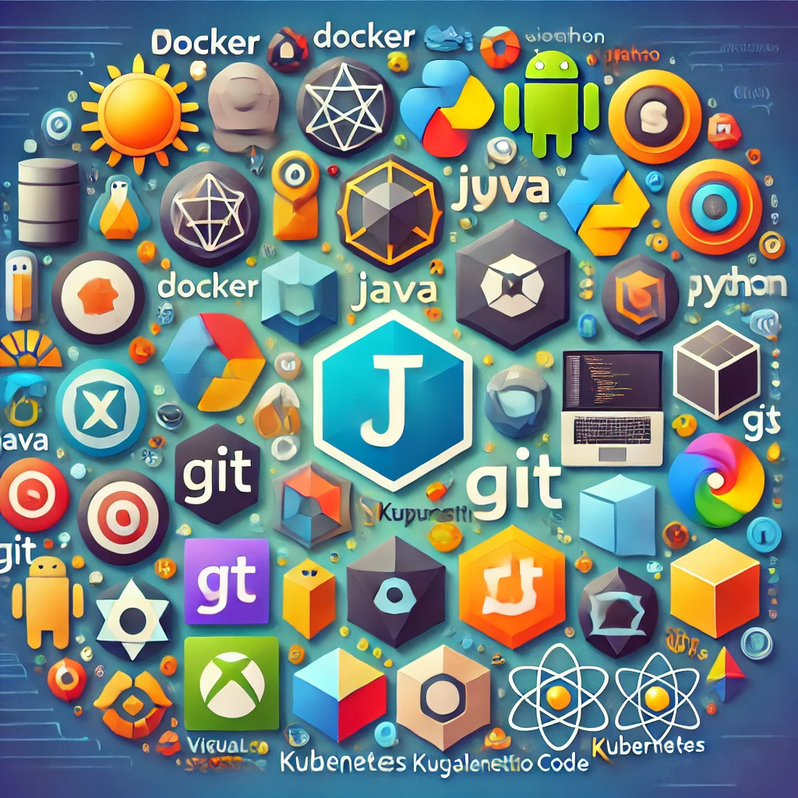

Environnement de Développement sur Mac

Je ne suis pas un développeur professionnel, je le fais pour le plaisir. Et j'aime expérimenter, découvrir de nouvelles technologies, développer toutes sortes de petites choses. Donc parfois j'ai besoin de Python, parfois de React/Typescript, Java et plus encore. Pour chaque outil ou langage de développement, il existe plusieurs options pour les installer et gérer leurs versions. Comme j'ai tendance à oublier des choses comme "Comment ai-je installé Python sur cette machine ?", ceci est une note pour le moi du futur, me disant comment j'ai installé chaque outil de développement.
Comme la façon dont certains packages sont installés peut changer au fil du temps, j'ajouterai des dates à mes choix d'installation.
Xcode
Xcode est l'outil de développement de base sur Mac. Il contient git et d'autres outils et compilateurs de base.
Je l'installe depuis l'Apple App Store.
Terminal
Mon terminal préféré est iTerm2, et je l'installe simplement depuis son site web. Voir ici pour savoir comment je le configure.
Shell zsh
Sur un nouveau Mac, voici ce que je fais :
# Vérifier quel Shell j'ai
echo "$SHELL"
# Au cas où ce n'est pas zsh, le définir comme par défaut
chsh -s "$(which zsh)"
VSCode
... ou VSCode-insiders
Extensions :
-
markdownlint par David Anson (
davidanson.vscode-markdownlint) - Le standard de facto pour le linting markdown avec plus de 10M de téléchargements. Souligne les problèmes en ligne et peut corriger automatiquement lors de l'enregistrement.code --install-extension davidanson.vscode-markdownlintLes fichiers de configuration sont recherchés dans cet ordre :.markdownlint.jsonc,.markdownlint.json,.markdownlint.yaml/.yml, ou.markdownlintrc. (Ajouté en janvier 2026) -
Prettier (
esbenp.prettier-vscode) - Formateur de code.code --install-extension esbenp.prettier-vscodeActiver le formatage à l'enregistrement dans les paramètres de VS Code :
json
{
"[markdown]": {
"editor.defaultFormatter": "esbenp.prettier-vscode",
"editor.formatOnSave": true
}
}
(Ajouté en janvier 2026)
Docker
Janvier 2025 : Je suis passé de Docker Desktop à Rancher Desktop.
Note d'installation : Téléchargé la version Apple Silicon, ouvert le DMG et copié dans mon répertoire Applications. Le seul détail que j'ai dû faire est de cocher la case "Accès Administratif" dans les paramètres.

Registry: J'utilise différents registres lorsque je travaille sur différents projets.
Question: Comment configurer docker pour qu'il télécharge des images depuis un registre spécifique ?
Java
Voici les options que j'ai vues :
Janvier 2025 : J'ai décidé d'utiliser SDK Man car il couvre également Maven.
Mini-Cheatsheet
sdk install java 17.0.12-jbrinstalle cette version spécifique de Javasdk list javamontre toutes les versions de Java disponibles (disponibles pour installation)- Pour lister les versions de Java installées :
sdk offline enable, ainsi il listera uniquement les versions installées localementsdk list javasdk offline disablesdk default java 21.0.6-amzndéfinit cette version comme par défaut Pour définir une version de Java comme par défaut dans un répertoire, voir la commande Env
Maven
J'utilise simplement brew install maven. Pour les versions plus anciennes brew install maven30 installe Maven 3.0.
Gradle
Janvier 2025 : J'ai décidé d'utiliser SDK Man pour Gradle également.
Raison : brew install gradle a installé la version 8.12.1 de Gradle, mais pour le projet actuel, j'avais besoin de la version 8.5.
sdk install gradle 8.5: Installe la version spécifique de gradlesdk use gradle 8.5
Node et npm
Janvier 2025 J'ai décidé d'utiliser nvm.
Mini-Cheatsheet
nvm use 16node -vmontre la version actuellement utiliséenvm install 12installe node 12 et l'utilise
Python
- Été 2024 : J'utilise pyenv
- Pour installer pyenv :
brew install pyenv
Mini-Cheatsheet
Pour sélectionner une version de Python installée par Pyenv comme version à utiliser, exécutez l'une des commandes suivantes :
pyenv install 3.12
pyenv shell <version> -- sélectionne juste pour la session shell actuelle
pyenv local <version> -- sélectionne automatiquement chaque fois que vous êtes dans le répertoire courant (ou ses sous-répertoires)
pyenv global <version> -- sélectionne globalement pour votre compte utilisateur
Linting Markdown
brew install markdownlint-cli2
Ruby
Pas encore réfléchi. Éviter Ruby en général... 😉